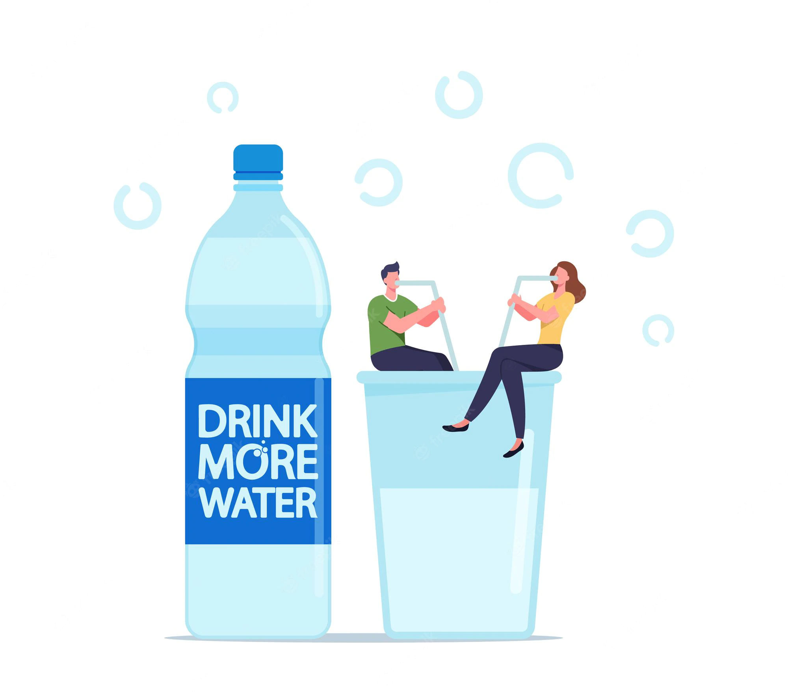

Developing a healthy lifestyle does not happen overnight,
but is the result of a process. Several factors play an important role in this process,
which together serve to create physical-spiritual harmony.
We can influence the health of our body in the most
direct way through nutrition. The purpose of nutrition is
to maintain the body and preserve health.

70 percent of the human body is water. One of the most important factors in maintaining our health is drinking
high-quality and sufficient water. Water contributes to almost every biological, mechanical and chemical process
that takes place in the body.
The human body is designed to move, if it does not move, it degrades. Regular exercise is good for our physical and mental
health. Movement improves our endurance and performance, making us more persistent. It is vital for maintaining health
and plays a crucial role in achieving and maintaining an ideal body weight.
As a part of nature, it is important for man to take into account the laws of nature and be in harmony with them.
Just as days are replaced by nights, humans also need rest after work. Rest is part of the daily rhythm.
We need a period when we relax and let ourselves go. At the same time, rest can be not only passive, there are also
active forms (for example: walking, hiking, relaxing, etc.). It is important to get to know your own rhythm and find
the right way to rest for you.
In order to control stress and create harmony, inner work is needed, during which we gain self-knowledge and aspire to
a mental health. It will also improve our sleep, mood and relationships.
There is no better time than now to start living healthy.